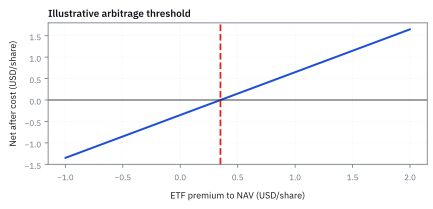
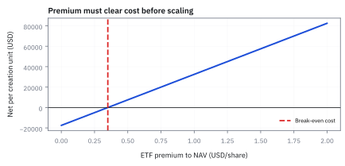

18.9 Exchange-Traded Fund (ETF) Creation-Redemption Arbitrage
ราคา ETF ถูกยึดไว้กับมูลค่าตะกร้าหุ้นด้วยการแลกหน่วยของ authorized participant แต่การแลกมีต้นทุน ขนาดขั้นต่ำ และเวลา ราคาจึงลอยได้ในแถบกว้างเท่าต้นทุน
ETF ตัวหนึ่งซื้อขายที่ \$101.20 ต่อหน่วย แต่มูลค่าทรัพย์สินสุทธิ (NAV) ของตะกร้าหุ้นข้างในคือ \$100.00 ต่อหน่วย สถาบันที่มีสิทธิ์แลก (AP) สร้างหน่วยใหม่ได้ครั้งละ 50,000 หน่วย เทรดเดอร์ใหม่คิดว่า “ส่วนต่าง \$1.20 คูณ 50,000 ได้ \$60,000 ต่อรอบฟรี ๆ” จริงไหม?
ลองตอบก่อนเปิดเฉลย
ไม่ฟรี การสร้างหน่วยเสียค่าแลก ค่าข้าม spread ของ ETF และของหุ้นในตะกร้า impact และค่าส่งมอบ รวม \$0.35 ต่อหน่วย เหลือ \$0.85 หรือ \$42,500 ต่อรอบ ถ้าตะกร้าซื้อยากจนต้นทุนเป็น \$1.50 ส่วนต่างเดิมกลายเป็นขาดทุน \$15,000 และถ้า NAV \$100.00 เป็นราคาปิดของตลาดที่ปิดไปแล้ว ส่วนต่างอาจไม่มีอยู่จริงเลย
สิ่งที่เราจะสร้าง
ทั้งบทนี้นับต้นทุนการซื้อขาย: ครึ่ง spread และ impact (18.5) การรอคิว (18.8) หน้านี้ใช้ทั้งหมดกับ arbitrage ที่เห็นบ่อยที่สุดในตลาด คือราคา ETF ที่ห่างจากมูลค่าของตะกร้าที่มันถือ ถ้า arbitrage ทำงานฟรี ราคาสองอย่างนี้ต้องเท่ากันตลอด ความจริงไม่เท่า และช่องว่างนั้นวัดต้นทุนของกลไกได้พอดี 24.3 จะใช้กรอบนี้ต่อกับตัวกลางอื่นของตลาด
ลำดับคือ วัด premium ไล่เงินสดของการสร้างหน่วยทีละขั้น แยกต้นทุน \$0.35 เป็นห้าก้อน ได้แถบที่ราคาลอยได้ (ไม่เท่ากันสองฝั่ง) ทำทางกลับเมื่อ ETF ถูกกว่า ดูความไวต่อต้นทุน แล้วดูสองเรื่องที่ทำให้ส่วนต่างบนจอไม่ใช่เงิน: เวลาระหว่างสองขา และ NAV ที่ล้าสมัย
ศัพท์ที่ใช้ในหัวข้อนี้
- ETF และ NAV
- ETF คือกองทุนที่หน่วยซื้อขายในตลาดระหว่างวันเหมือนหุ้น NAV คือมูลค่าตะกร้าที่กองทุนถือ หักหนี้สิน หารด้วยจำนวนหน่วย ใช้เป็นเกณฑ์ว่าราคา ETF แพงหรือถูก
- Authorized participant (AP)
- สถาบันที่มีสัญญากับผู้ออกกองทุน ส่งตะกร้าหุ้นแลกหน่วย ETF ใหม่ได้ (creation) หรือส่งหน่วยคืนแลกตะกร้า (redemption) เป็นผู้เดียวที่ปิดส่วนต่างด้วยการแลกได้
- Creation unit
- ขนาดขั้นต่ำของการแลก เช่น 50,000 หน่วย ทำให้ส่วนต่างเล็ก ๆ ไม่คุ้มเพราะต้องใช้เงินก้อนใหญ่และมีค่าธรรมเนียมคงที่
- Premium และ discount
- ราคา ETF สูงกว่า NAV (premium) หรือต่ำกว่า (discount) เป็นเปอร์เซ็นต์ของ NAV บอกว่าควรสร้างหน่วยหรือไถ่ถอน ถ้าคุ้มต้นทุน
- In-kind
- การแลกด้วยหุ้นจริงแทนเงินสด กองทุนไม่ต้องซื้อขายเอง ต้นทุนการซื้อขายจึงตกอยู่กับ AP และกองทุนไม่ต้องขายหุ้นจนเกิดภาระภาษีกำไรทุนให้ผู้ถือหน่วย
สัญลักษณ์และหน่วย
| สัญลักษณ์ | ความหมาย | หน่วย |
|---|---|---|
| $P,\ \mathrm{NAV}$ | ราคา ETF ในตลาด และมูลค่าตะกร้าต่อหน่วย | \$ ต่อหน่วย |
| $\pi$ | premium ($\pi\lt0$ คือ discount) | สัดส่วนของ NAV |
| $N$ | ขนาด creation unit | หน่วย |
| $c_{\rm cr},\ c_{\rm rd}$ | ต้นทุนรวมต่อหน่วยของการสร้าง และการไถ่ถอน | \$ ต่อหน่วย |
| $F,\ s_E$ | ค่าแลกต่อครั้ง และ spread ของ ETF | \$, \$ ต่อหน่วย |
| $s_B,\ I,\ c_s$ | ครึ่ง spread ของตะกร้า impact และค่าส่งมอบ ต่อหน่วย ETF | \$ ต่อหน่วย |
ขั้นที่ 1 — วัด premium
เริ่มจากวัดว่าราคา ETF ห่างจากมูลค่าตะกร้าเท่าไร เป็นสัดส่วนของ NAV เพื่อเทียบ ETF ต่างราคากันได้ บวกคือ ETF แพงกว่าตะกร้า
ETF แพงกว่าตะกร้า 1.20% คนที่ทำให้ส่วนต่างนี้หดได้คือ AP: ซื้อของถูก (ตะกร้า) แลกเป็นของแพง (หน่วย ETF) แล้วขาย ขั้นถัดไปไล่เงินของเส้นทางนี้
ขั้นที่ 2 — เส้นทางการสร้างหน่วยเป็นเงิน และต้นทุนห้าก้อน
AP ซื้อหุ้นในตะกร้าครบชุดสำหรับ 50,000 หน่วย ส่งให้ผู้ออกกองทุนแลกเป็นหน่วยใหม่ แล้วขายหน่วยนั้นในตลาด ทุกขั้นมีค่าผ่านทาง: ค่าแลก \$500 ต่อครั้ง ครึ่ง spread ของ ETF (spread 4 เซนต์) ครึ่ง spread ของหุ้นในตะกร้า impact ของการซื้อตะกร้า และค่าเงินทุนกับการส่งมอบ (สามก้อนหลังเป็นตัวเลขสมมติต่อหน่วย ETF)
ส่วนต่างขั้นต้น \$60,000 ถูกหักห้าก้อน: ค่าแลก \$500 ครึ่ง spread ของ ETF \$1,000 spread ของตะกร้า \$7,500 impact \$7,500 และค่าส่งมอบ \$1,000 รวม \$17,500 เหลือ \$42,500 ต่อรอบ หรือ \$0.85 ต่อหน่วย ค่าแลกเป็นก้อนเล็กที่สุด ก้อนใหญ่คือการซื้อหุ้นในตะกร้าจริง ๆ ซึ่งคือต้นทุนของ 18.5
Figure 18.9a — จากส่วนต่าง \$60,000 เหลือ \$42,500

หน่วยพันดอลลาร์ต่อ creation unit แท่งแรกคือส่วนต่างขั้นต้น 60.0 (ขายหน่วย 5,060.0 พัน ลบซื้อตะกร้า 5,000.0 พัน) แท่งแดงห้าแท่งคือค่าแลก −0.5 ครึ่ง spread ของ ETF −1.0 spread ของตะกร้า −7.5 impact −7.5 และค่าส่งมอบ −1.0 แท่งเขียวสุดท้ายคือ 42.5 ตรงกับขั้นที่ 2
ขั้นที่ 3 — แถบที่ราคาลอยได้โดยไม่มีใครแลก
ถ้า premium ต่อหน่วยน้อยกว่าต้นทุนการสร้าง ไม่มี AP คนไหนสร้างหน่วยเพราะขาดทุน ถ้า ETF ถูกกว่า NAV ทางกลับคือซื้อ ETF ส่งไถ่ถอนเป็นตะกร้าแล้วขายตะกร้า ซึ่งมีต้นทุนของมันเอง สมมติการขายตะกร้ามี impact มากกว่าการซื้อ 5 เซนต์ ต้นทุนไถ่ถอนจึงเป็น \$0.40 ต่อหน่วย ราคา ETF จึงลอยได้อย่างอิสระในแถบนี้
บรรทัดแรกคือเงื่อนไขที่การสร้างไม่มีกำไร บรรทัดที่สองคือเงื่อนไขที่การไถ่ถอนไม่มีกำไร หารทั้งคู่ด้วย NAV แล้วรวมเป็นแถบเดียว แถบไม่จำเป็นต้องเท่ากันสองฝั่ง เพราะการขายตะกร้าอาจแพงกว่าการซื้อ premium 1.20% อยู่นอกแถบบน จึงมีกำไร 0.85% ให้คนสร้างหน่วย
นี่คือเหตุที่ ETF ที่ถือหุ้นใหญ่สภาพคล่องสูงซื้อขายห่าง NAV แค่ไม่กี่ bp ขณะที่ ETF พันธบัตรหรือหุ้นตลาดเกิดใหม่ห่างได้ 1 ถึง 2% เป็นเวลานาน โดยไม่มีใครปิดส่วนต่างได้โดยไม่ขาดทุน
Figure 18.9b — premium ต้องชนะต้นทุนก่อนจะเหลือกำไร

แกนนอนคือ premium เป็นดอลลาร์ต่อหน่วย −1 ถึง 2 (301 จุด) แกนตั้งคือ premium ลบต้นทุน \$0.35 เส้นประคือจุดคุ้มทุน 0.35 ข้อควรรู้: เส้นนี้คือเส้นทางการสร้างอย่างเดียว ฝั่ง premium ติดลบ (discount) คนที่ทำคือคนไถ่ถอน ซึ่งมีเส้นของตัวเองตามขั้นที่ 4 ส่วนที่ติดลบของเส้นนี้จึงไม่ใช่ขาดทุนที่ใครต้องรับ
Figure 18.9c — กำไรต่อรอบตาม premium

แกนนอนคือ premium 0 ถึง \$2 ต่อหน่วย (101 จุด) แกนตั้งคือกำไรต่อรอบ $50{,}000(\text{premium}-0.35)$ เป็นดอลลาร์ เส้นประคือจุดคุ้มทุน 0.35 ที่ premium 1.20 ได้ \$42,500 แกนตั้งเป็นเงิน ไม่ใช่เปอร์เซ็นต์ เพื่อให้เห็นว่ากำไรต่อรอบขึ้นกับขนาดหน่วยด้วย
ขั้นที่ 4 — ทางกลับ: ETF ถูกกว่าตะกร้า \$1.20
โจทย์ให้อะไรมาบ้าง: ETF ซื้อขายที่ \$98.80 NAV \$100.00 ต้นทุนไถ่ถอน \$0.40 ต่อหน่วย ขนาดหน่วย 50,000
คำตอบ: ซื้อ ETF 50,000 หน่วยที่ \$98.80 ส่งไถ่ถอนเป็นตะกร้า แล้วขายหุ้นในตะกร้าที่มูลค่ารวม \$100.00 ต่อหน่วย เหลือ \$0.80 ต่อหน่วย หรือ \$40,000 ต่อรอบ น้อยกว่าทางสร้างหน่วยเพราะการขายตะกร้าแพงกว่า
ตรวจเองใน 10 วินาที: ทิศต้องเป็นซื้อของถูก (ETF) ขายของแพง (ตะกร้า) ถ้าทำกลับด้านจะล็อกขาดทุน \$1.20 บวกต้นทุน
ขั้นที่ 5 — ความไวต่อต้นทุน: ตะกร้าที่ซื้อยาก
โจทย์ให้อะไรมาบ้าง: premium เท่าเดิม \$1.20 ต่อหน่วย ลองต้นทุนการสร้างห้าระดับ ตั้งแต่ตะกร้าหุ้นใหญ่ที่ซื้อง่ายไปจนถึงตะกร้าพันธบัตรในวันตึงเครียด
คำตอบ: กำไรต่อรอบลดลงเป็นเส้นตรงตามต้นทุน และติดลบเมื่อต้นทุนเกิน \$1.20 ในวันที่ตลาดพันธบัตรตึงเครียด ต้นทุนซื้อขายตะกร้าพุ่ง แถบจึงกว้างขึ้นเอง ETF ที่ซื้อขายห่าง NAV มากในวันนั้นไม่ได้แปลว่ามีเงินฟรี แต่อาจกำลังบอกราคาขายจริงของตะกร้าได้เร็วกว่า NAV ที่ยังใช้ราคาประเมินเดิม
ตรวจเองใน 10 วินาที: ทุก 1 เซนต์ของต้นทุนคือ \$500 ต่อรอบ จาก 0.35 ไป 1.50 คือ 115 เซนต์ หรือ \$57,500 และ $42{,}500-57{,}500=-15{,}000$
Figure 18.9d — กำไรต่อรอบเมื่อต้นทุนเปลี่ยน

premium \$1.20 ต่อหน่วย ขนาดหน่วย 50,000 แท่งสี่แท่งคือต้นทุน \$0.15, \$0.35, \$0.75 และ \$1.10 ได้ \$52,500, \$42,500, \$22,500 และ \$5,000 ทุกแท่งยังเป็นบวก กรณีต้นทุน \$1.50 ที่ขาดทุน \$15,000 ในขั้นที่ 5 ไม่มีในรูป
ขั้นที่ 6 — เวลาระหว่างสองขา: ส่วนต่างล็อกได้เมื่อทำพร้อมกันเท่านั้น
กำไร \$0.85 ต่อหน่วยสมมติว่าซื้อตะกร้ากับขาย ETF เกิดพร้อมกัน ถ้าสองขาห่างกัน 30 นาที ราคาตะกร้าเดินได้ ใช้ความผันผวนรายวัน 1% และวันซื้อขายสหรัฐฯ 390 นาที (6.5 ชั่วโมง) ความผันผวนเป็นสัดส่วนกับรากที่สองของเวลาตาม 9.1
ระหว่าง 30 นาทีนั้น ผลของรอบเดียวแกว่งได้ SD \$13,868 เทียบกับกำไรที่คาด \$42,500 ยังห่างราว 3 SD จึงยังคุ้ม แต่ถ้า premium เหลือแค่ \$0.50 กำไรที่คาด \$7,500 จะเล็กกว่า SD ของความเสี่ยงระหว่างขา AP จึงทำสองขาให้เกือบพร้อมกัน และ hedge ด้วยสัญญาล่วงหน้าของดัชนีระหว่างรอ
ขั้นที่ 7 — NAV ที่ล้าสมัย: premium ที่ไม่มีอยู่จริง
โจทย์ให้อะไรมาบ้าง: ETF หุ้นญี่ปุ่นซื้อขายในนิวยอร์กที่ \$101.20 NAV \$100.00 คำนวณจากราคาปิดของโตเกียวเมื่อคืน ระหว่างวันในนิวยอร์ก สัญญาล่วงหน้าของดัชนีญี่ปุ่นบอกว่าตะกร้าตอนนี้น่าจะมีค่า \$101.50 ต่อหน่วย
คำตอบ: เทียบกับมูลค่าตะกร้าตอนนี้ ETF ถูกกว่า 0.30% ไม่ได้แพง ถ้าเชื่อ premium 1.20% แล้วขาย ETF เพื่อสร้างหน่วย ต้องซื้อตะกร้าตอนโตเกียวเปิดที่ราว \$101.50 เสีย \$0.30 บวกต้นทุน \$0.35 ขาดทุน \$32,500 ต่อรอบ ราคา ETF ในนิวยอร์กกำลังบอกข่าวที่ NAV ยังไม่รู้
ตรวจเองใน 10 วินาที: $-0.30-0.35=-0.65$ ต่อหน่วย คูณ 50,000 ได้ −32,500
คำถามที่ควรถามออกมาดัง ๆ
ทำไมคนทั่วไปทำ arbitrage นี้เองไม่ได้? เพราะมีแต่ AP ที่แลกหน่วยกับผู้ออกกองทุนได้ และต้องทำเป็นก้อนใหญ่ คนทั่วไปทำได้แค่ซื้อ ETF หนึ่งตัวแล้วขายหุ้นในตะกร้าที่ตัวเองถือ ซึ่งไม่ปิดส่วนต่าง ถ้า AP ไม่สนใจทำ (เช่นงบดุลเต็ม) ส่วนต่างอยู่ได้นาน
ทำไมแลกเป็นหุ้นจริง ไม่ใช่เงินสด? ถ้ากองทุนรับเงินสดแล้วซื้อหุ้นเอง ต้นทุนซื้อขายจะตกกับผู้ถือหน่วยทุกคน และเมื่อมีคนไถ่ถอน กองทุนต้องขายหุ้นจนเกิดกำไรทุนที่ต้องเสียภาษี การแลกแบบ in-kind ผลักต้นทุนทั้งหมดไปที่ AP ซึ่งยอมรับเพราะได้ส่วนต่างเป็นค่าตอบแทน
ความผิดที่ให้คำตอบผิดแบบเงียบ ๆ
นับส่วนต่างขั้นต้นเป็นกำไร: \$60,000 บนจอเหลือ \$42,500 หลังต้นทุน และติดลบ \$15,000 ถ้าตะกร้าซื้อยาก
เชื่อ NAV ที่ล้าสมัย: ETF ต่างประเทศมี “premium” 1.20% ต่อ NAV เมื่อคืน แต่ถูกกว่าตะกร้าตอนนี้ 0.30% ทำตามตัวเลขบนจอขาดทุน \$32,500
ใช้แถบเท่ากันสองฝั่ง: ถ้าการขายตะกร้าแพงกว่าการซื้อ แถบล่างกว้างกว่า (−0.40% เทียบ +0.35%) discount 0.38% จึงไม่ใช่โอกาส ทั้งที่ premium 0.38% เป็น
ทำสองขาห่างกัน: 30 นาทีระหว่างขาทำให้ผลของรอบเดียวแกว่ง SD \$13,868
ใช้ทำอะไรบนโต๊ะจริง
โต๊ะของ AP และผู้ดูแลสภาพคล่องของ ETF คำนวณแถบของขั้นที่ 3 ทุกวินาทีจากราคาหุ้นในตะกร้า spread และ impact ที่วัดเอง แล้วสร้างหรือไถ่ถอนเมื่อราคาหลุดแถบ ผู้จัดการพอร์ตที่ซื้อ ETF ใช้ premium เทียบกับแถบเพื่อตัดสินว่าจ่ายแพงไปแค่ไหน และในวันตลาดตึงเครียดใช้ discount ของ ETF พันธบัตรเป็นข้อมูลราคาขายจริงของตะกร้า แทน NAV ที่ยังใช้ราคาประเมินเดิม
สามโจทย์ตรวจความเข้าใจ
1. ETF ซื้อขายที่ \$100.60 NAV \$100.00 ต้นทุนการสร้าง \$0.35 ต่อหน่วย หน่วยละ 50,000 คุ้มไหม ได้เท่าไร?
เฉลย
premium 0.60% อยู่นอกแถบบน 0.35% คุ้ม ได้ $50{,}000(0.60-0.35)=\$12{,}500$ ต่อรอบ
2. ETF ซื้อขายที่ \$99.70 NAV \$100.00 ต้นทุนไถ่ถอน \$0.40 ต่อหน่วย ควรไถ่ถอนไหม?
เฉลย
discount 0.30% อยู่ในแถบล่าง −0.40% ไถ่ถอนแล้วได้ $50{,}000(0.30-0.40)=-\$5{,}000$ ขาดทุน ไม่มี AP ทำ ราคาจึงลอยอยู่ที่นั่นได้
3. ถ้าผู้ออกกองทุนลดขนาดหน่วยเหลือ 25,000 หน่วย แต่ค่าแลกยัง \$500 ต่อครั้ง ต้นทุนต่อหน่วยและกำไรต่อรอบที่ premium \$1.20 เป็นเท่าไร?
เฉลย
ค่าแลกต่อหน่วยเป็น $500/25{,}000=\$0.02$ ต้นทุนรวม \$0.36 ได้ $25{,}000(1.20-0.36)=\$21{,}000$ ต่อรอบ กำไรต่อรอบลดครึ่งหนึ่งกว่านิดหน่อย แต่ส่วนต่างเล็กลงก็คุ้มทำได้ง่ายขึ้นเพราะใช้เงินน้อยลง
คำนวณซ้ำด้วย JavaScript
โค้ดนี้คิดต้นทุนรวมของการสร้างและไถ่ถอนจากห้าก้อน เลือกเส้นทางตามทิศของส่วนต่าง คิดกำไรต่อหน่วยและต่อรอบ แถบที่ราคาลอยได้ ความไวต่อต้นทุน ความเสี่ยงระหว่างสองขา และกรณี NAV ล้าสมัย แล้วพิมพ์ตัวเลขหลักหนึ่งบรรทัด
const {sqrt} = Math;
function positive(name, v) {
if (!(typeof v === 'number' && Number.isFinite(v) && v > 0)) throw new RangeError(`${name} must be a positive number`);
return v;
}
// All-in cost per ETF share of one creation (or redemption) route.
function routeCost({fee, unit, etfSpread, basketSpread, impact, settle}) {
return fee / positive('unit', unit) + etfSpread / 2 + basketSpread + impact + settle;
}
// Profit per unit of the route that the price gap calls for: create when the ETF is rich, redeem when it is cheap.
function arbitrage({price, nav, unit, create, redeem}) {
positive('price', price); positive('nav', nav); positive('unit', unit);
const premium = (price - nav) / nav;
if (price >= nav) return {premium, route: 'create', perShare: price - nav - create, perUnit: unit * (price - nav - create)};
return {premium, route: 'redeem', perShare: nav - price - redeem, perUnit: unit * (nav - price - redeem)};
}
const createCost = routeCost({fee: 500, unit: 50000, etfSpread: 0.04, basketSpread: 0.15, impact: 0.15, settle: 0.02});
const redeemCost = routeCost({fee: 500, unit: 50000, etfSpread: 0.04, basketSpread: 0.15, impact: 0.20, settle: 0.02});
const costs = {create: createCost, redeem: redeemCost};
const rich = arbitrage({price: 101.20, nav: 100, unit: 50000, ...costs});
// Waterfall of the creation route in dollars per unit.
const waterfall = {basket: -50000 * 100, etf: 50000 * 101.20, fee: -500, etfHalfSpread: -50000 * 0.02,
basketSpread: -50000 * 0.15, impact: -50000 * 0.15, settle: -50000 * 0.02};
// Legs done 30 minutes apart: basket price risk over 30 of the 390 minutes of a US trading day, daily volatility 1%.
const sd30 = 0.01 * sqrt(30 / 390) * 100;
// Stale NAV: the basket's home market closed at 100.00, but futures imply the basket is now worth 101.50.
const stale = {vsStale: rich.premium, vsFair: (101.20 - 101.50) / 101.50, createLoss: 50000 * (101.20 - 101.50 - createCost)};
console.log(JSON.stringify({
createCost, redeemCost, rich, gross: 50000 * 1.20,
waterfall, waterfallNet: Object.values(waterfall).reduce((a, b) => a + b, 0),
band: [-redeemCost / 100, createCost / 100],
cheap: arbitrage({price: 98.80, nav: 100, unit: 50000, ...costs}),
sensitivity: [0.15, 0.35, 0.75, 1.10, 1.50].map(c => 50000 * (1.20 - c)),
timing: {sdPerShare: sd30, sdPerUnit: 50000 * sd30, ratio: (1.20 - createCost) / sd30},
stale,
exercises: {
small: arbitrage({price: 100.60, nav: 100, unit: 50000, ...costs}),
inside: arbitrage({price: 99.70, nav: 100, unit: 50000, ...costs}),
halfUnit: routeCost({fee: 500, unit: 25000, etfSpread: 0.04, basketSpread: 0.15, impact: 0.15, settle: 0.02})
}
}));ที่มาที่ไป
กองทุนดัชนีที่ซื้อขายในตลาดตัวแรก ๆ คือ TIPs ในตลาดโตรอนโตปี 1990 ในสหรัฐฯ Nathan Most แห่ง American Stock Exchange ออกแบบ SPDR (SPY) ที่อ้างอิงดัชนี S&P 500 และเริ่มซื้อขายเดือนมกราคม 1993 หัวใจของการออกแบบคือการแลกแบบ in-kind ระหว่างหน่วยกองทุนกับตะกร้าหุ้น ซึ่งทำให้กองทุนไม่ต้องซื้อขายเอง และทำให้ AP มีแรงจูงใจดึงราคาให้ใกล้ NAV เสมอ
ข้อจำกัด: วิธีนี้สมมติอะไร และของจริงเป็นอย่างไร
| สมมติอะไร | ของจริง | ผลเวลาใช้งาน |
|---|---|---|
| AP พร้อมแลกเสมอ | มีแต่สถาบันที่ได้สิทธิ์ และงบดุลของพวกเขาเต็มได้ | ส่วนต่างอาจค้างนานกว่าที่แถบบอก |
| NAV คือมูลค่าที่ขายได้ตอนนี้ | NAV อาจใช้ราคาปิดเก่าหรือราคาประเมิน | premium ที่เห็นอาจไม่มีจริง (ขั้นที่ 7) |
| ต้นทุนคงที่และสองขาพร้อมกัน | ต้นทุนพุ่งในวันตึงเครียด และสองขามีเวลาห่าง | แถบกว้างขึ้นและกำไรมีความเสี่ยง (ขั้นที่ 5 และ 6) |
สิ่งที่ควรตอบได้หลังอ่าน
- premium 1.20% คือส่วนต่างขั้นต้น \$60,000 ต่อรอบ หลังต้นทุนห้าก้อน \$0.35 ต่อหน่วยเหลือ \$42,500
- ราคา ETF ลอยได้ในแถบ $-c_{\rm rd}/\mathrm{NAV}\le\pi\le c_{\rm cr}/\mathrm{NAV}$ ซึ่งไม่จำเป็นต้องเท่ากันสองฝั่ง (−0.40% ถึง +0.35%)
- ทางกลับเมื่อ ETF ถูกกว่า: ซื้อ ETF ไถ่ถอน ขายตะกร้า ได้ \$40,000 ในตัวอย่าง
- ตะกร้าที่ซื้อยากทำให้ส่วนต่างเดิมขาดทุน (−\$15,000) เวลาระหว่างสองขาเพิ่มความเสี่ยง และ NAV ที่ล้าสมัยสร้าง premium ปลอม (−\$32,500)
บทที่ 19 ใช้หลักเดียวกันกับสัญญาที่ตกลงราคาวันนี้เพื่อซื้อขายวันหน้า: ราคาของสัญญาล่วงหน้าถูกยึดกับราคาปัจจุบันด้วยต้นทุนการถือครอง และส่วนต่างที่ดูเหมือนล็อกได้ต้องหักต้นทุนนั้นก่อนเสมอ